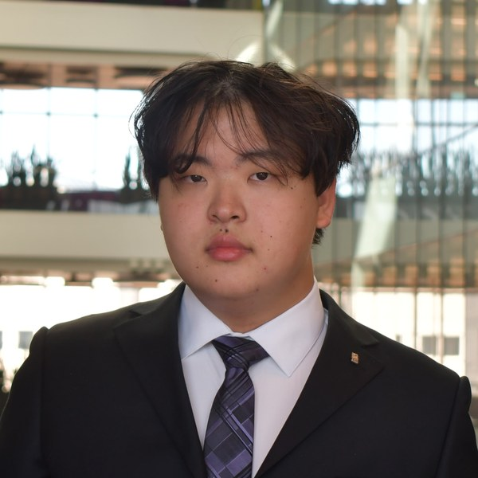

About Me
Hello! I'm a 3rd-year student at Northeastern University studying Data Science & Business Administration with a focus in Finance. I grew up in Cupertino, CA, but recently spent an amazing year studying abroad in London, where I managed to explore over 13 countries along the way!
This coming Spring, I'm excited to start as a Tax Analyst Co-op at Focus Financial Partners. Before this, I worked in consulting and product QA engineering, where I got to dive into problem-solving, streamlining processes, and crunching data. Long term, I'm interested in private equity and venture capital, especially real estate finance.
On campus, I'm involved with Case Consulting Group and Beta Alpha Psi, and I lead recruitment for AIQS. These have given me the chance to work on real client projects and meet people from all kinds of backgrounds. I've also spent time working in food service, at a ramen restaurant and as an assistant manager at a boba shop, which taught me a lot about staying calm during busy rushes and training new team members.
When I'm not studying or working, you can usually find me bouldering (I recently joined NU Rec Climbing for outdoor trips), checking out local cafes and restaurants, or relaxing with some anime and K-dramas. I also speak Mandarin and am always happy to chat about travel, food, or finance!
